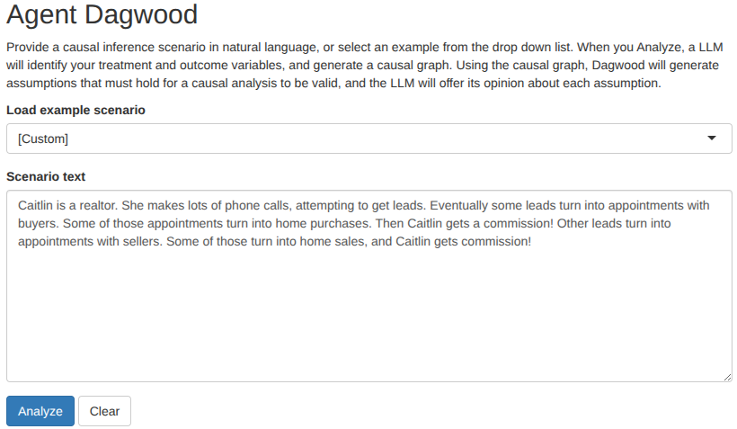
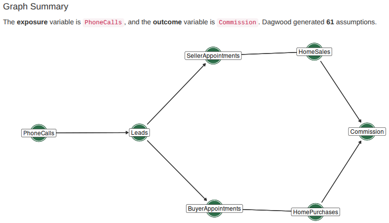
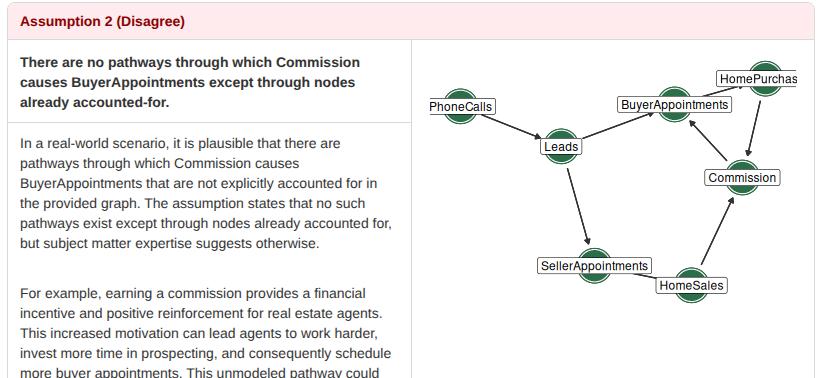
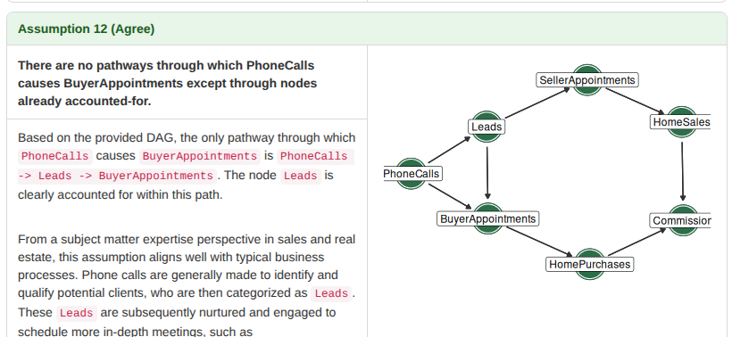

Bit flipping laboratory & Personal website
If someone offered you a plate of warm crispy freshly baked chocolate chip cookies, would you really Reject them or would you Accept All and say thank you?
In causal inference, wrong arrows or missing nodes in the causal graph can invalidate a whole analysis. The dagwood tool takes a treatment, an outcome, and a causal graph called the Root DAG. It generates a set of variations called Branch DAGs, along with corresponding assumptions that must hold for the inference to work. Our work explores pairing dagwood with a modern LLM.
Our original vision was a LLM agent that could use dagwood as a tool, but we ended with a LLM-enabled webapp. The user enters a causal scenario in natural language, and the app returns a causal graph, dagwood's Branch DAGs, plain-language assumptions, and LLM critiques of each assumption. The agentdagwood source code is available on GitHub and the package itself can be installed from R-universe.
What does the app look like? It shows a large text box where users can enter a scenario. The drop down box above it let them choose from several pre-defined scenarios provided by Sam Zhang, who taught the class Ben and I took.

After the user clicks Analyze, the LLM creates a causal graph. The app shows the graph alongside the LLM's identification of the exposure and outcome variables. It also feeds the graph into dagwood, and reports the number of generated assumptions.

One at a time, the LLM offers an opinion about the assumptions. The app shows the assumption as generated by dagwood, the LLM's verdict, and its reasoning. Off to the side, it shows the Branch DAG that corresponds to the assumption. The Branch DAG shows what the causal graph would look like if the assumption were violated: for instance, an extra node or arrow reversal. If the LLM disagrees with the assumption, it tries to justify the existence of the extra node or arrow reversal using its latent domain knowledge.

Sometimes, but rarely in our experience, the LLM agrees with assumption. The headers clearly indicate the LLM's agreement or disagreement to help the analyst parse the sometimes rather lengthy output.

In the demo screenshots, we looked at the following causal inference scenario.
Caitlin is a realtor. She makes lots of phone calls, attempting to get leads. Eventually some leads turn into appointments with buyers. Some of those appointments turn into home purchases. Then Caitlin gets a commission! Other leads turn into appointments with sellers. Some of those turn into home sales, and Caitlin gets commission!
Besides being less academically oriented, this scenario differs from the pre-defined example scenarios available in the app in that it has seven nodes instead of about four; but where dagwood generates only a handful of assumptions for the pre-defined scenarios, it generates 61 assumptions for this one!
The dagwood authors describe in their paper the algorithm by which Branch DAGs are generated. They also justify why the work of considering each and every one is so necessary.
Adding complexity and adjustment to a DAG is not free, and those assumptions displayed are only ever as overwhelming as what is encoded in the original root DAG. DAGWOODs do not generate new complexity so much as show the complexity that was already there.
The realtor scenario looked simple to me at first, even though I saw some flaws. One thing that helped convince me of the utility of Branch DAGs was that the LLM found credible and mostly distinct reasons to distrust 59 of the 61 assumptions.
I initially felt some skepticism about whether LLMs would be able to meaningfully evaluate causal assumptions. One reason was because Judea Pearl's critique of LLMs in my first introduction to causal inference, The Book of Why. Another reason was personal experience. I tried using ChatGPT to help generate argument maps for this website, perhaps two years before creating agentdagwood. It could not seem to understand the graphical structure of claims or the difference between positive and negative evidence.
In reality, the LLM (even though we used Gemini instead of ChatGPT, and this task was somewhat different) did quite well. It could not necessarily consider without prompting all the dubious assumptions that dagwood generated, but I don't think a human would either. Humans benefit from access to calculators, chess engines, and Wikipedia articles to augment their latent knowledge and reasoning capabilities. LLMs benefit from these tools too, including dagwood.
The relatively weak ollama models our laptops were capable to run did not fare so well. They gave consistently nonsensical responses. Many responses were so malformed that dagwood could not even consume them; or they disregarded clear instructions to preface evaluations with Agree or Disagree. We added error handling to the app to address this.
Even professional models like Gemini were not perfect. In the Rainfall and Civil Conflict example, it once drew a direct arrow from Rainfall to CivilConflict, skipping intermediate economic variables. In the Police Hiring and Crime example, it once produced a cycle between CrimeRate and PoliceSize, a structural violation that would prevent dagwood from accepting the graph as input.
In the assumption evaluation phase of the analysis, the LLM lacks knowledge of the whole scenario. It sometimes says things that make sense just from looking at the causal graph, but not in the whole context of the raw example text. For instance, it seems in general like CivilConflict should affect EconomicGrowth, but in the context of the Rainfall and Civil Conflict scenario it is clear that economic growth was being measured before civil conflict. Providing the full scenario text at this stage is a natural avenue for improvement.
The pipeline's output are also highly sensitive to the design of the system prompts supplied to the LLM. Small changes in how the DAG construction or assumption evaluation instructions are framed meaningfully alter the structure of the graph produced, the detail of the assumptions returned, and the reasoning the model offers in its assessments. It seems system and user prompts require careful customization for each LLM being attached to the app.